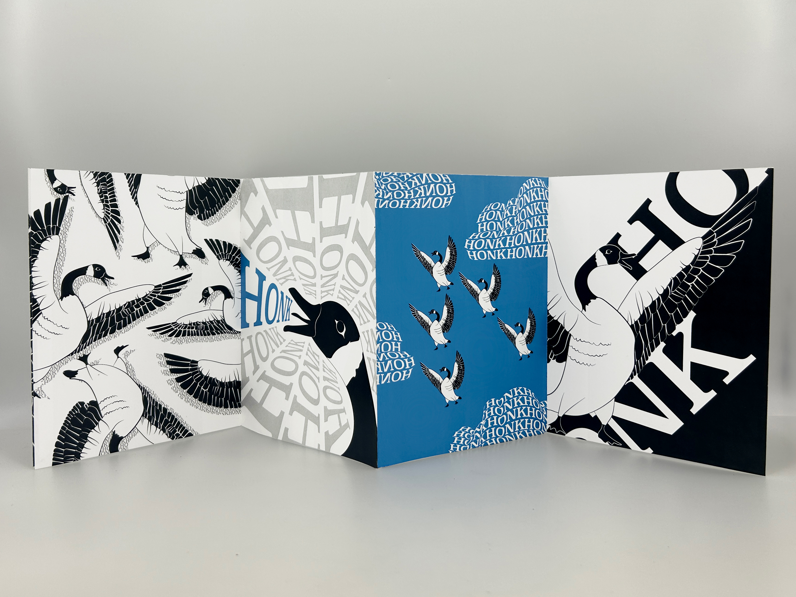

Visual Systems
Project from Purdue AD226 :
For this project, I created a cohesive visual system around five
distinct dance styles: Ballet, hip hop, tap, jazz, and character.
This project allowed me to explore the complexities of creating a
cohesive yet varied visual system, pushing me to find the balance
between individual and unified designs.
To start the project I created a mood board using images for each style of dance. I used the images to curate a color scheme that I used for my icons and app mockups. This process allowed me to establish a consistent style before beginning my ideation.
I created mockups of and app concept that could utilize my icons. I chose to design an app for finding and scheduling nearby dance classes, using my icons as a basis for style and color theme and building from there.
Word Book
Project from Purdue AD205 :
For this project, I was challenged to choose an onomatopaea and an illustration and create an accordian style booklet.
I chose the work 'Honk' and created an illustration of a goose and experimented with typography, composition, and color.
My process included initial sketches of my image, and ideation for each of the pages. My goal was to create a balance through color, pattern, shape, and my use of negative space. For each page I took a unique aproach while maintaining a consistent theme to create a cohesive spread.
Movie Poster
Project from Purdue AD227 :
For this project, I began by researching surrealist art and fantasy movie posters like Harry Potter, Percy Jackson, and The Lord of the Rings.
I focused on identifying recurring visual motifs that embody the magical essence of the fantasy genre.
During the development process, I explored a variety of surrealist techniques. My final composition blends vibrant colors, intricate details, and fluid transitions to highlight the films magical world while maintaining a focus on storytelling. Balancing surrealism with fantasy required careful consideration of visual hierarchy and typography, ensuring that the fantastical elements didn’t overwhelm the design.

Event Card
Project from Purdue AD227 :
For this project, I created a visually engaging event card for the Cincinnati Festival of Lights, focusing on clarity, professionalism, and an inviting
aesthetic. I drew inspiration from light festivals and winter celebrations, using dynamic light patterns, contrasting colors, and festive imagery to reflect
the event's spirit. I designed a clean layout to emphasize key details such as the event title, location, and ticket prices, ensuring clear communication.
This project challenged me to blend creativity with technical precision in designing an event card for the Cincinnati Festival of Lights. I incorporated jellyfish light graphics and a rainbow tunnel to capture the event's magical spirit. Through experimenting with multiple font styles, I developed a cohesive system that enhances the festive tone while maintaining readability, resulting in a lively and polished design.